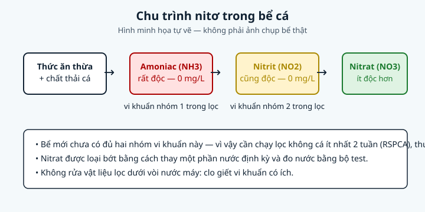

Cách xử lý nước mới trước khi thả cá
Tác giả: Ruler
Bể mới nhìn rất sạch. Nước trong, lọc chạy êm, cây đứng thẳng, đá và lũa đã xếp xong. Người mới nhìn bể như vậy thường nghĩ chỉ cần thả cá vào là xong. Thực tế thì bể mới là bể nguy hiểm nhất, vì trong lọc chưa có đủ vi khuẩn để xử lý chất thải của cá. Cá thả vào bể mới không chết vì đói hay vì lạ bể, mà thường chết vì nước của chính chúng làm ra trở nên độc trước khi hệ lọc kịp trưởng thành.
Bài này là bài giải thích đầy đủ nhất trong website về nước mới. Vì sao cá neon chết hàng loạt sau 1 tuần và Chọn bể cá đầu tiên: kích thước, lọc, đèn và nền chỉ nhắc ngắn tới bài này, không viết lại toàn bộ. Nếu bạn chỉ đọc một bài trước khi mua cá, hãy đọc bài này.
Nước trong không có nghĩa là nước an toàn
RSPCA viết rất rõ một câu mà người mới nên nhớ: không thể biết chất lượng nước chỉ bằng cách nhìn. Nước trong vẫn có thể chứa amoniac và nitrit ở mức gây hại. Cách duy nhất để biết là đo bằng bộ test. Bộ test amoniac và nitrit là thứ RSPCA gọi là thiết yếu, không phải đồ chơi thêm.
Chất thải của cá đi theo một chuỗi ba bước. Cá thải amoniac qua mang, thức ăn thừa và chất thải hữu cơ phân hủy cũng tạo thêm amoniac. Amoniac rất độc với cá. Trong bể đã ổn định, một nhóm vi khuẩn trong lọc chuyển amoniac thành nitrit. Nitrit cũng độc. Một nhóm vi khuẩn khác chuyển nitrit thành nitrat. Nitrat ít độc hơn nhiều, nhưng nếu tích tụ quá cao vẫn gây hại, và được loại bớt bằng cách thay nước định kỳ. Chuỗi này có tên là chu trình nitơ.

Sơ đồ dưới đây giúp bạn nhớ chuỗi này:
Thức ăn thừa + chất thải của cá
↓
Amoniac (NH3) — rất độc
↓ vi khuẩn nhóm 1 trong lọc
Nitrit (NO2) — cũng độc
↓ vi khuẩn nhóm 2 trong lọc
Nitrat (NO3) — ít độc hơn, loại bớt bằng thay nước
Bể mới chưa có hai nhóm vi khuẩn đó, hoặc có rất ít. Vì vậy amoniac tăng lên mà không có gì xử lý, rồi nitrit tăng lên sau đó. Cá sống trong nước đó sẽ bị tổn thương mang, khó thở, bỏ ăn và chết dần trong những tuần đầu. Tình trạng này có tên là hội chứng bể mới, và AquaCompat mô tả nó thường xuất hiện trong một tới ba tuần đầu sau khi thả cá vào bể chưa chạy lọc xong.
Mức an toàn mà RSPCA đưa ra rất đơn giản: amoniac 0 mg/L và nitrit 0 mg/L. Không phải "gần bằng 0 là được", mà là 0. Nếu bộ test của bạn vẫn hiện amoniac hay nitrit trên 0, bể chưa sẵn sàng để thả thêm cá, và nếu cá đã ở trong bể thì bạn cần thay nước và giảm cho ăn ngay.
Clo và cloramin: xử lý trước khi nước chạm vào bể
Nước máy ở nhiều nơi được khử trùng bằng clo hoặc cloramin để an toàn cho người uống. Với cá và với vi khuẩn lọc, hai chất này đều nguy hiểm. RSPCA viết clo trong nước máy nguy hiểm cho cả cá và vi khuẩn, vì vậy cần cho chất khử clo vào nước mới. Tài liệu về chất lượng nước trong bể cá của Pets in the Classroom cũng viết clo và cloramin cực độc với sinh vật thủy sinh, gây kích ứng và tổn thương mang khiến cá không thở được, và cần cho chất xử lý nước (natri thiosulfat) vào nước máy mỗi khi thêm nước vào bể.
Có hai cách xử lý mà người mới hay nhầm lẫn. Cách thứ nhất là dùng thuốc khử clo theo đúng liều trên nhãn, cho vào nước mới trước khi đổ vào bể. Cách này xử lý được cả clo và cloramin nếu sản phẩm ghi rõ xử lý được cloramin. Cách thứ hai là để nước đứng 24 giờ. RSPCA có nhắc cách để nước đứng 24 giờ để clo bay đi. Nhưng cách này không đáng tin cậy cho cloramin, vì cloramin bền hơn clo nhiều và không bay đi nhanh như vậy. Vì vậy bài này khuyên người mới dùng thuốc khử clo ghi rõ xử lý được cloramin, thay vì chỉ để nước đứng rồi cho rằng đã an toàn. Nếu bạn không chắc nước máy nhà mình dùng clo hay cloramin, hãy hỏi công ty cấp nước địa phương hoặc cửa hàng thủy sinh, và chọn sản phẩm ghi rõ xử lý được cả hai.
Ở Việt Nam, câu hỏi này có câu trả lời cụ thể theo từng thành phố. Ở TP.HCM, Tổng Công ty Cấp nước Sài Gòn (Sawaco) cho biết các nhà máy nước của họ khử trùng bằng clo ở bước cuối cùng trước khi đưa nước vào mạng lưới — nghĩa là nước máy ở TP.HCM chắc chắn có clo, và bạn cần khử clo trước khi cho nước mới vào bể.
Một lỗi khác là rửa vật liệu lọc dưới vòi nước máy. RSPCA dặn không bao giờ rửa bọt lọc dưới vòi, vì clo sẽ giết vi khuẩn có ích. Khi cần vệ sinh lọc, hãy rửa nhẹ vật liệu lọc trong nước bể đã hút ra khi thay nước, rồi đặt lại vào lọc.
Chạy lọc không cá: cách an toàn nhất
Cách an toàn nhất để xử lý nước mới là chạy lọc không có cá, còn gọi là fishless cycling. RSPCA khuyên mạnh cách này: chạy bể và lọc một thời gian trước khi thả bất kỳ con cá nào. Trong thời gian đó, bạn "gieo" vi khuẩn bằng sản phẩm khởi động vi khuẩn hoặc bằng vật liệu lọc từ một bể đã ổn định và không có bệnh, rồi đo nước cách ngày.
RSPCA viết thời gian chạy lọc ít nhất là hai tuần, và không có quy tắc chính xác về tổng thời gian, vì mỗi bể khác nhau. Các nguồn khác tổng hợp lại cho khoảng dài hơn: AquaCompat ghi Practical Fishkeeping cho khoảng 4–6 tuần cho hầu hết các bể, còn Merck Veterinary Manual cho khoảng 6 tuần và có thể tới 8 tuần cho bể nhiệt đới. Các con số này không mâu thuẫn nhau nếu hiểu đúng: hai tuần là mức tối thiểu của RSPCA, còn 4–8 tuần là khoảng thường gặp để vi khuẩn phát triển đủ. Bài này không chọn một con số rồi khẳng định bể của bạn sẽ xong đúng ngày đó. Bài khuyên bạn tin vào kết quả đo, không tin vào lịch.
Dấu hiệu bể đã chạy lọc xong, theo RSPCA, là amoniac và nitrit đã tăng lên rồi quay về 0. Nói cách khác, bạn phải thấy đường đi của hai chỉ số đó: lúc đầu amoniac tăng, sau đó nitrit xuất hiện, rồi cả hai cùng về 0 và nitrat bắt đầu xuất hiện. Nếu bạn đo từ ngày đầu mà amoniac luôn bằng 0, có thể bạn chưa cho vi khuẩn đủ "thức ăn" để phát triển, chứ không phải bể đã xong. Vi khuẩn cần nguồn amoniac để lớn lên, và trong cách chạy lọc không cá, nguồn đó là một lượng nhỏ thức ăn cá hoặc dung dịch amoniac chuyên dùng, cho theo đúng hướng dẫn của sản phẩm.
Checklist 7 ngày đầu và các tuần tiếp theo
Checklist dưới đây dựa trên trình tự của RSPCA và AquaCompat. Đây không phải là lịch cố định cho mọi bể, mà là khung để bạn ghi chép và đối chiếu với kết quả đo của chính mình.
Ngày 0 — Lắp đặt và xử lý nước lần đầu:
- Đặt bể ở vị trí chắc chắn, tránh ánh nắng trực tiếp và nguồn nhiệt, như hướng dẫn ở Chọn bể cá đầu tiên: kích thước, lọc, đèn và nền.
- Rửa sạch nền, đá, lũa và cây bằng nước sạch, không dùng xà phòng hay chất tẩy.
- Cho nước máy vào bể, cho thuốc khử clo đủ liều cho toàn bộ thể tích bể, bật lọc và sưởi.
- Đặt nhiệt độ theo loài cá bạn định nuôi, dùng nhiệt kế riêng để kiểm tra, đừng chỉ tin vào núm vặn của sưởi.
- Ghi lại ngày bắt đầu, thể tích bể, loại lọc và loại thuốc khử clo đã dùng.
Ngày 1–2 — Cho vi khuẩn "thức ăn" đầu tiên:
- Cho một lượng rất nhỏ thức ăn cá hoặc nguồn amoniac chuyên dùng, theo hướng dẫn sản phẩm.
- Đo amoniac và nitrit lần đầu để có số gốc. Ghi lại con số, đừng chỉ nhớ "nước vẫn trong".
Ngày 3–7 — Đo cách ngày, đừng vội:
- Đo amoniac và nitrit cách ngày, như RSPCA khuyên trong thời gian chạy lọc.
- Bạn có thể thấy amoniac tăng lên. Đó là dấu hiệu bình thường của giai đoạn đầu, không phải dấu hiệu cần thay toàn bộ nước ngay.
- Không thả cá trong tuần này, dù nước nhìn rất trong.
- Nếu nước đục trắng nhẹ, đó có thể là vi khuẩn trong nước đang phát triển — AquaCompat ghi hiện tượng đục do vi khuẩn có thể xuất hiện trong cùng giai đoạn này — nhưng đây chỉ là khả năng, không phải dấu hiệu bể đã xong hay đã hỏng. Hãy tiếp tục đo, đừng vội cho thuốc làm trong nước.
Tuần 2–4 — Chờ nitrit xuất hiện rồi biến mất:
- Khi amoniac bắt đầu giảm, nitrit sẽ xuất hiện. Đây là giai đoạn thứ hai của chu trình.
- Tiếp tục đo cách ngày. Đừng rửa lọc, đừng thay quá nhiều nước trong giai đoạn này, vì bạn có thể làm chậm vi khuẩn đang bám vào vật liệu lọc.
- Nếu amoniac hoặc nitrit tăng quá cao trong khi bạn đang chạy lọc không cá, hãy thay một phần nước đã khử clo và giảm lượng thức ăn cho vi khuẩn.
Khi nào thì thả cá:
- Chỉ thả khi amoniac và nitrit đều về 0 trong hai lần đo liên tiếp, cách nhau ít nhất một ngày. Nitrat bắt đầu xuất hiện chỉ là dấu hiệu phụ cho thấy chu trình đang chạy — RSPCA chỉ yêu cầu amoniac và nitrit đã tăng rồi về 0, không đặt ngưỡng nitrat nào.
- Thả một nhóm loài mỗi lần, rồi đo lại và chờ 2–3 tuần trước khi thêm nhóm tiếp theo, theo hướng dẫn của App-Aquatic. Ví dụ: đợt đầu chỉ thả hai tới ba con nhỏ. Nếu nước vẫn giữ ở 0 sau khoảng chờ đó, mới thả thêm.
- Khi thả cá mới, tắt đèn, ngâm túi cá trong bể khoảng 30 phút cho nhiệt độ cân bằng như RSPCA hướng dẫn, rồi dùng vợt chuyển cá sang bể và bỏ nước trong túi đi, đừng đổ nước túi vào bể.
Nếu cá đã ở trong bể mới: cách xử lý khẩn cấp
Nhiều người đọc bài này khi cá đã ở trong bể. Trong trường hợp đó, đừng vớt hết cá ra và bắt đầu lại từ đầu. Hãy làm theo trình tự khẩn cấp dưới đây, dựa trên RSPCA và AquaCompat.
Thứ nhất, đo ngay amoniac, nitrit, pH và nhiệt độ, ghi lại con số. Không đoán bằng mắt. RSPCA viết nếu amoniac và nitrit cao hơn mức an toàn, cần thay một nửa lượng nước mỗi ngày và tiếp tục đo cho tới khi điều kiện cải thiện.
Thứ hai, thay nước bằng nước mới đã khử clo và đã làm ấm tới nhiệt độ gần bằng nhiệt độ bể, để cá không bị sốc nhiệt. AquaCompat ghi Merck Veterinary Manual khuyên thay ít nhất 50% nước khi tổng amoniac từ 2 mg/L trở lên, còn UF/IFAS gợi ý 25–50%. Bài này không chọn một con số duy nhất cho mọi trường hợp, mà khuyên bạn thay 25–50% mỗi ngày cho tới khi hai chỉ số về 0, và thay nhiều hơn khi amoniac đã cao. Nước thay vào phải là nước đã khử clo, đúng nhiệt độ, nếu không việc thay nước sẽ gây thêm hại.
Thứ ba, giảm cho ăn xuống mức tối thiểu. Thức ăn thừa phân hủy thành amoniac, và trong bể chưa có vi khuẩn, mỗi bữa ăn thừa đều làm nước độc thêm. Cách cho ăn đúng được viết đầy đủ ở Cho cá cảnh ăn đúng cách: bao nhiêu, mấy lần và lỗi thường gặp. Trong giai đoạn khẩn cấp, cho ăn ít và vớt thức ăn thừa sau vài phút là việc cần làm ngay.
Thứ tư, giữ lọc chạy liên tục, đừng tắt lọc ban đêm và đừng rửa vật liệu lọc dưới vòi. Nếu lọc bị tắc, rửa nhẹ trong nước bể đã hút ra.
Thứ năm, không thả thêm cá mới trong thời gian này. Bể chưa xử lý nổi chất thải của cá đang có, thêm cá chỉ làm amoniac tăng nhanh hơn.
Thứ sáu, nếu cá vẫn chết sau khi amoniac và nitrit đã về 0, hãy hỏi bác sĩ thú y chuyên về cá. AquaCompat ghi cá bị tổn thương do amoniac có thể phát bệnh nhiều tuần sau khi nước đã sạch, vì vậy nước sạch không phải lúc nào cũng có nghĩa là cá đã khỏi hẳn.
Bốn lỗi người mới hay mắc nhất
Lỗi thứ nhất là thả cá ngay trong ngày mua bể. Bể mới chưa có vi khuẩn, cá thả vào sẽ sống trong nước mà amoniac tăng dần mỗi ngày. Lỗi này tránh được bằng cách mua bể trước, mua cá sau ít nhất hai tuần, và dùng thời gian đó để luyện thói quen đo nước.
Lỗi thứ hai là cho quá nhiều thức ăn để "nuôi vi khuẩn nhanh hơn". Thức ăn thừa không làm vi khuẩn lớn nhanh hơn, nó chỉ làm amoniac tăng nhanh hơn. Hãy cho một lượng rất nhỏ và đo để biết vi khuẩn đang làm việc tới đâu.
Lỗi thứ ba là thay toàn bộ nước khi thấy nước đục. Thay toàn bộ nước không làm vi khuẩn trong lọc biến mất hoàn toàn, nhưng nó làm thay đổi pH và nhiệt độ đột ngột, khiến cá sốc. Thay một phần nước, đúng nhiệt độ và đã khử clo, là cách an toàn hơn.
Lỗi thứ tư là dùng nước máy chưa khử clo để rửa lọc hoặc châm thêm nước. Clo giết vi khuẩn trong lọc, và bể đang chạy lọc dở sẽ phải bắt đầu lại từ đầu. Hãy để sẵn một xô nước đã khử clo để dùng cho việc thay nước và rửa lọc.
Kết luận
Xử lý nước mới không phải là một mẹo nhỏ, mà là bước quyết định cá của bạn sống hay chết trong tháng đầu. Nước trong không có nghĩa là nước an toàn. Amoniac và nitrit phải về 0 thì bể mới sẵn sàng. Clo và cloramin phải được khử trước khi nước chạm vào bể. Vi khuẩn lọc cần ít nhất hai tuần theo RSPCA, và thường cần lâu hơn, để phát triển đủ. Người nuôi kiên nhẫn đo nước cách ngày, thả cá theo từng đợt ít con, và ghi lại kết quả đo của chính mình sẽ ít phải mua lại cá hơn rất nhiều so với người thả cá ngay trong ngày đầu.
Nguồn tham khảo
- RSPCA, "Choosing an Aquarium for Pet Fish" — nước trong không có nghĩa là nước khỏe, bộ test amoniac và nitrit là thiết yếu, mức an toàn 0 mg/L cho cả hai, thay nước định kỳ để loãng chất thải (trang RSPCA ghi khoảng 30%/tuần ở mục lọc và lấy ra 10% ở mục thay nước — hai con số khác nhau trên cùng một trang, vì vậy bài không dùng một con số duy nhất làm quy tắc), không rửa vật liệu lọc dưới vòi, clo nguy hiểm cho cá và vi khuẩn, chạy lọc không cá ít nhất hai tuần, đo nước cách ngày, chỉ thả cá khi amoniac và nitrit đã tăng rồi về 0 (truy cập 23/11/2026): https://science.rspca.org.uk/en/web/rspca/adviceandwelfare/pets/fish/environment
- RSPCA, "Keeping Fish as Pets" — khuyên dùng fishless cycling khi mới lập bể, chỉ thả cá khi bể đã chạy ít nhất hai tuần, chọn cá ở cửa hàng có bể sạch và cá bơi khỏe (truy cập 23/11/2026): https://www.rspca.org.uk/adviceandwelfare/pets/fish
- AquaCompat, "New Tank Syndrome: Symptoms, Causes and Emergency Fixes" — hội chứng bể mới thường trong 1–3 tuần đầu, nguyên nhân là bể chưa có vi khuẩn, thời gian vi khuẩn phát triển 4–6 tuần theo Practical Fishkeeping và khoảng 6 tuần, có thể tới 8 tuần, theo Merck Veterinary Manual; thay ít nhất 50% nước khi tổng amoniac từ 2 mg/L trở lên (truy cập 23/11/2026): https://aquacompat.com/diseases/new-tank-syndrome/
- Pets in the Classroom, "Water Quality in the Freshwater Aquarium" — clo và cloramin cực độc với sinh vật thủy sinh, gây tổn thương mang, cần cho chất xử lý nước vào nước máy mỗi khi thêm nước vào bể (truy cập 23/11/2026): https://petsintheclassroom.org/wp-content/uploads/2017/11/Aquarium-Water-Quality-Curriculum.pdf
- App-Aquatic, "Best Beginner Aquarium Fish | Easy Starter Species" — thêm một nhóm loài mỗi lần, chờ 2–3 tuần giữa các lần thêm và kiểm tra nước trước mỗi lần mua thêm (truy cập 23/11/2026): https://app-aquatic.com/guide-best-beginner-aquarium-fish.html
- Cổng thông tin điện tử Hội đồng nhân dân TP.HCM, "Ngành nước Thành phố Hồ Chí Minh chủ động ứng phó El Nino từ sớm, từ xa" — các nhà máy nước của Sawaco áp dụng chuỗi xử lý hiện đại, cuối cùng là khử trùng bằng clo trước khi đưa vào mạng lưới cấp nước (truy cập 25/11/2026): https://hdnd.hochiminhcity.gov.vn/tin-tuc/ban-do-thi/nganh-nuoc-thanh-pho-ho-chi-minh-chu-dong-ung-pho-el-nino-tu-som-tu-xa